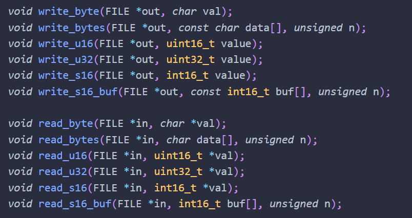

Audio Generator (C)
March 2021
EN.601.220 Intermediate Programming
Objectives:
Skills Applied:
Comments:
I revisited concepts on sinusoidal waves in my reserach projects on animal control theory. It is interesting to see
how simple mathematical equations create such variety in digital music.

The wave sinusoids.

Functions implemented.